Institution
SIP
Background
MAPEH
SIP
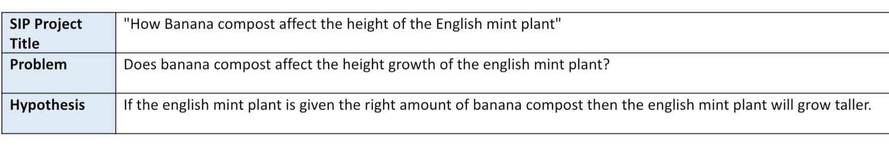
I. INTRODUCTION
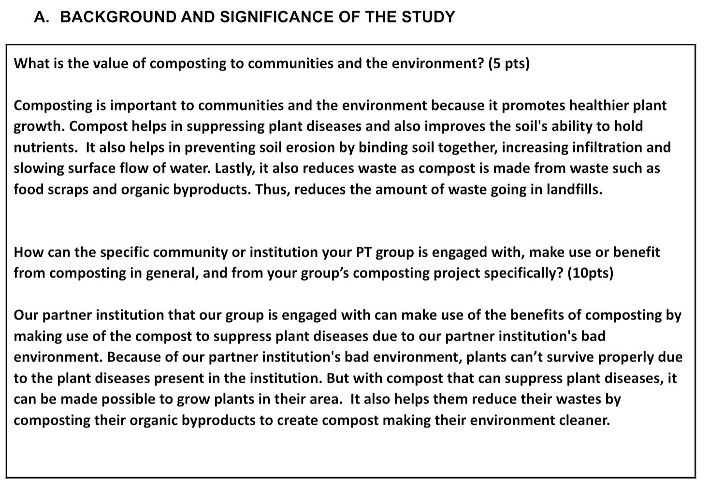
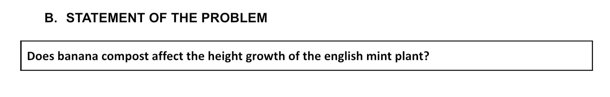
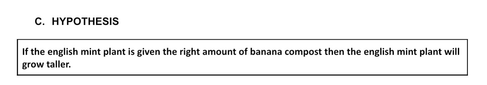
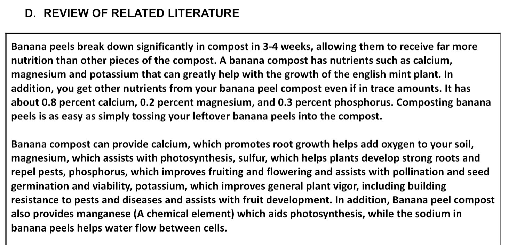
II. METHODOLOGY
A. VARIABLES
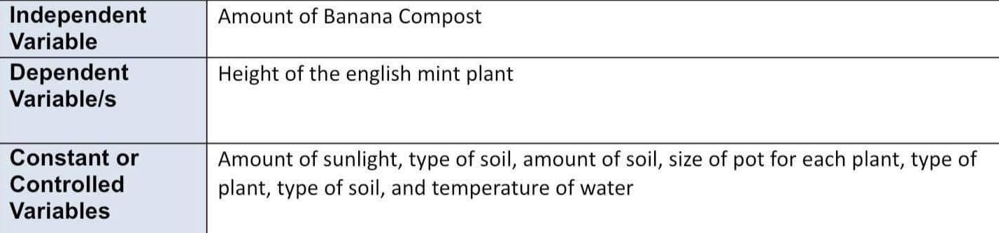
B. TREATMENTS/SET-UP
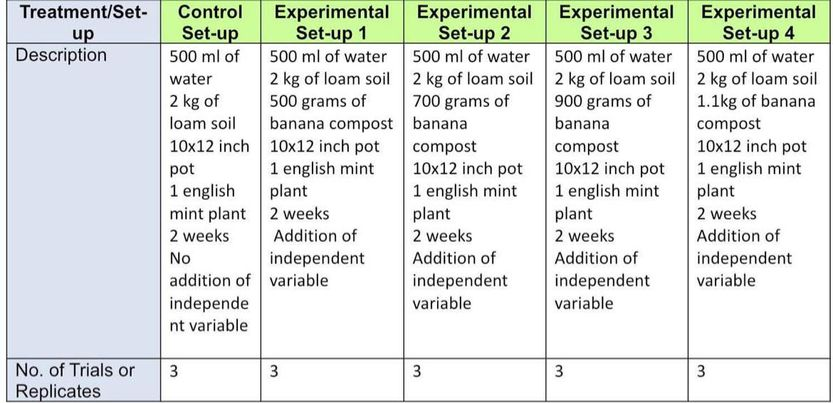
C. EXPERIMENTAL DATA TO BE MEASURED OR OBSERVED
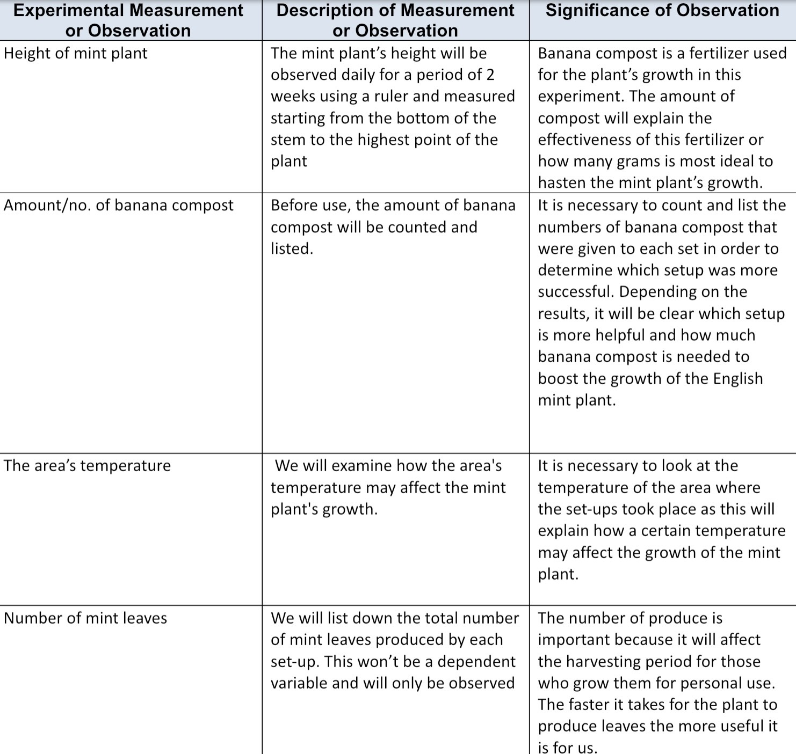
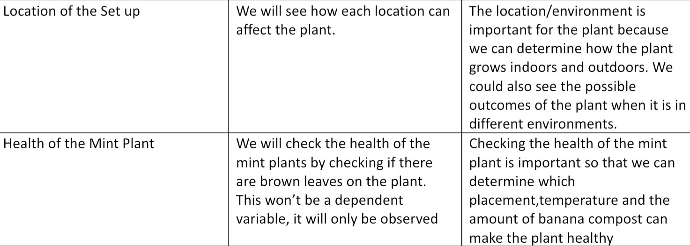
D. MATERIALS AND EQUIPMENT NEEDED
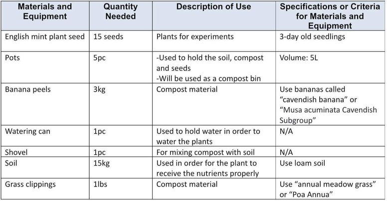
E. PROCEDURES FOR TESTING AND GATHERING/OBTAINING DATA
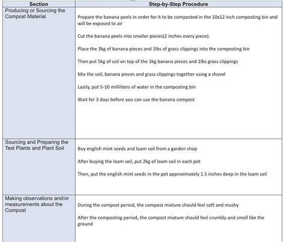
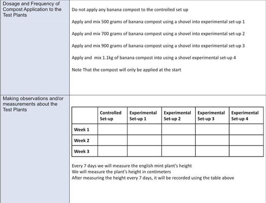
III. VISUAL DOCUMENTATION OF INITIAL SIP SET-UP
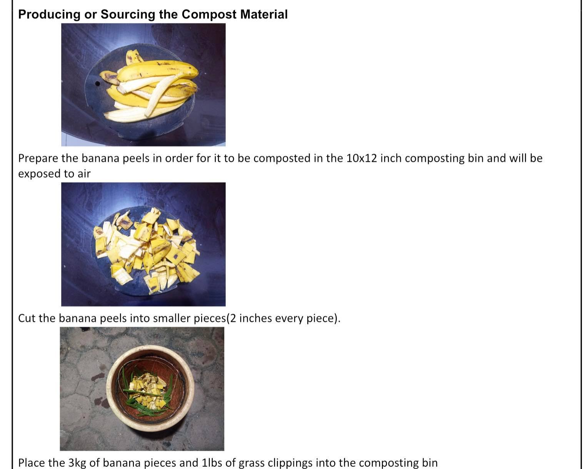
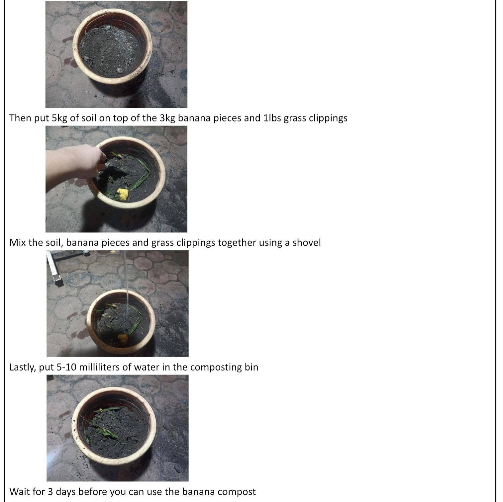
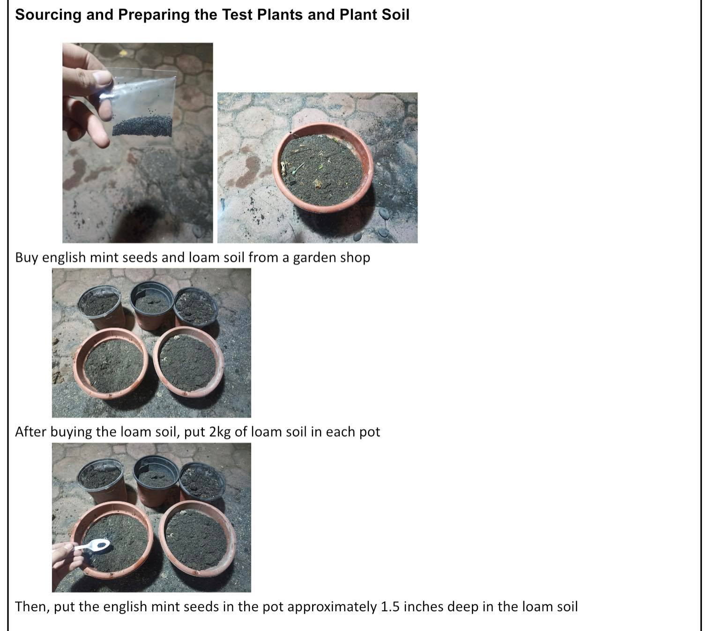
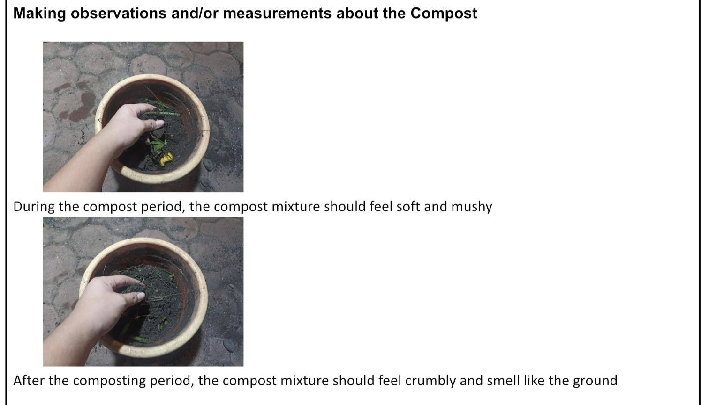
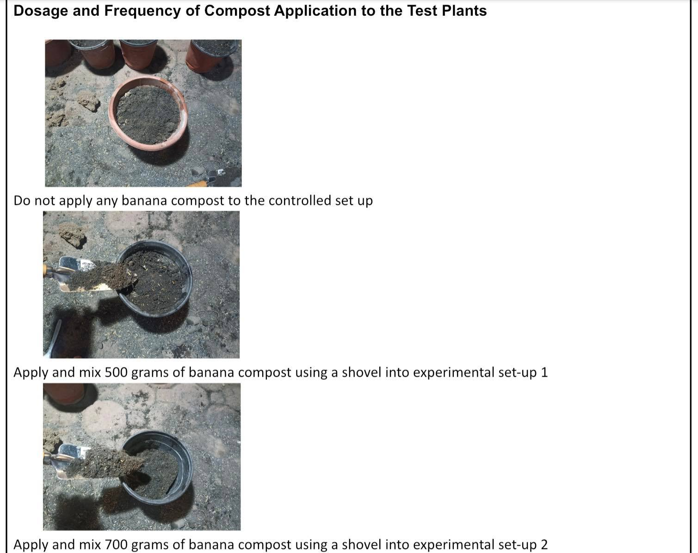
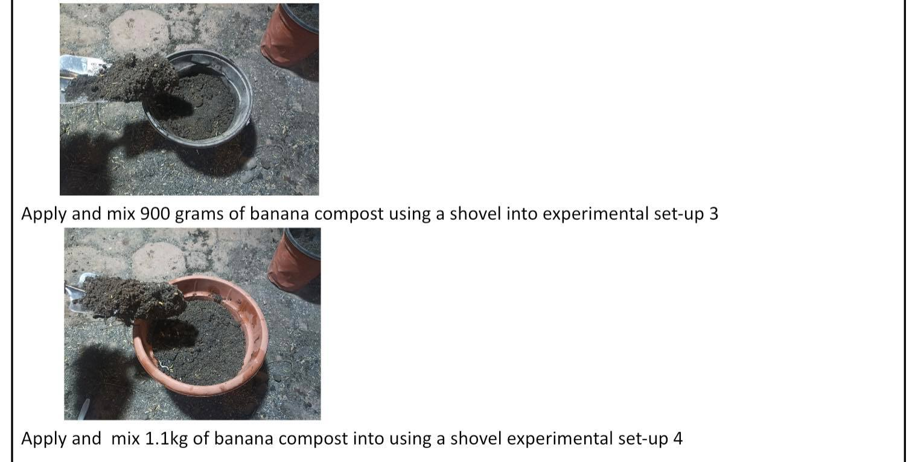
About The Web Designer
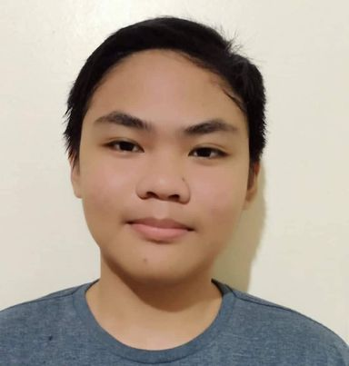
Jesril is a tall guy who loves to exercise and do assignments and tasks. He is a person who would gladly take on a challenge. He is the type of person who would answer an assignment due to boredom. He doesn't like to play online games but really likes physical activities like running or cycling.

Marie is a quiet student. She is fond of reading books in the library
during her break. At times, she enjoys touring around campus with a friend. Moments with her family
members and pets are what she treasures most.